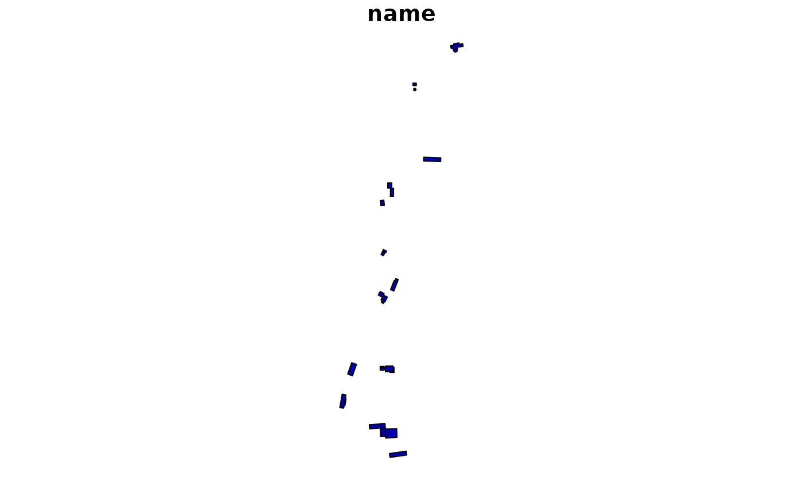

Shapefiles from the MacLeish Field Station. The field station
itself is located at lat = 42.449167, lon = -72.679389. These
data contain information about various man-made and natural structures
surrounding the field station.
Format
A list of sf::sf() objects, each providing a different layer.
- landmarks
Landmarks
- forests
Type of dominant tree in individual forests, as noted by Jesse Bellemare
- streams
local streams
- challenge_courses
Challenge courses on the property
- buildings
Buildings at MacLeish
- wetlands
Wetland areas
- boundary
the property boundary
- research
research plots
- soil
soil deposits used by Amy Rhodes
- trails
Hiking trails
- camp_sites
Two camp sites
- elevation
30 foot elevation contours
Details
Each of the sf::sf() objects are projected in
epsg:4326 for easy integration with Google Maps or
leaflet::leaflet() objects.
Examples
names(macleish_layers)
#> [1] "landmarks" "forests" "streams"
#> [4] "challenge_courses" "buildings" "wetlands"
#> [7] "boundary" "research" "soil"
#> [10] "trails" "camp_sites" "elevation"
macleish_layers[["buildings"]]
#> Simple feature collection with 27 features and 1 field
#> Geometry type: POLYGON
#> Dimension: XY
#> Bounding box: xmin: -72.68251 ymin: 42.44104 xmax: -72.67923 ymax: 42.44919
#> Geodetic CRS: WGS 84
#> First 10 features:
#> name geometry
#> 1 0 POLYGON ((-72.68056 42.4484...
#> 2 0 POLYGON ((-72.68051 42.4483...
#> 3 0 POLYGON ((-72.68123 42.4464...
#> 4 0 POLYGON ((-72.68116 42.4463...
#> 5 0 POLYGON ((-72.68134 42.4461...
#> 6 0 POLYGON ((-72.68135 42.4451...
#> 7 0 POLYGON ((-72.68137 42.4450...
#> 8 0 POLYGON ((-72.68102 42.4445...
#> 9 0 POLYGON ((-72.68098 42.4444...
#> 10 0 POLYGON ((-72.68143 42.4443...
if (require(sf)) {
plot(macleish_layers[["buildings"]])
}
#> Loading required package: sf
#> Linking to GEOS 3.12.1, GDAL 3.8.4, PROJ 9.4.0; sf_use_s2() is TRUE
